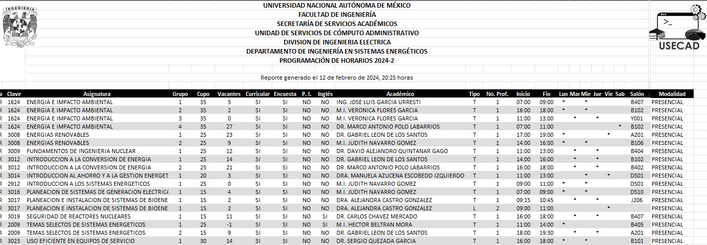

Horarios de Asignaturas

Asignaturas de Licenciatura
ENERGÍA E IMPACTO AMBIENTAL
El alumno analizará la información sobre las fuentes de energía primaria y los procesos de conversión y utilización de la energía. Identificará y analizará el impacto de estos procesos sobre el ambiente y las medidas que son necesarias para minimizarlo. Identificará la normatividad aplicable a estos procesos.
Ver programa de estudios
Ver programa de estudios
ENERGÍAS RENOVABLES
El alumno obtendrá una visión general de las energías renovables, específicamente de la energía eólica,
geotérmica, solar y bioenergética. Comprenderá el papel de éstas fuentes en el abastecimiento de energía
eléctrica y térmica y de su papel futuro ante los retos ambientales globales.
Ver programa de estudios
Ver programa de estudios
FUNDAMENTOS DE ENERGÍA NUCLEAR
El alumno enunciará, describirá y aplicará los conceptos básicos indispensables para continuar con una formación
en ingeniería nuclear.
Ver programa de estudios
Ver programa de estudios
INGENIERÍA DE REACTORES NUCLEARES
El alumno enunciará, describirá y aplicará los conceptos básicos de la ingeniería de reactores nucleares y de su tecnología.
Ver programa de estudios
Ver programa de estudios
INTRODUCCIÓN A LA CONVERSIÓN DE ENERGÍA
El alumno conocerá y aprenderá los conceptos básicos y principios para la transformación de la energía primaria
en las diversas formas de energía térmica y mecánica utilizadas en los sistemas energéticos.
Así como en la operación de los sistemas de potencia basados en sistemas hidráulicos y térmicos, a fin de poder
conceptuar, evaluar y analizar los aspectos básicos de funcionamiento, operación y desempeño técnico y económico de las plantas de potencia.
Ver programa de estudios
Ver programa de estudios
INTRODUCCIÓN A LOS SISTEMAS ENERGÉTICOS
El alumno obtendrá una visión general del funcionamiento de los sistemas energéticos y de su relación con
la física, la tecnología, la economía, la sociedad, el ambiente, la política y los factores institucionales.
Aprenderá a manejar herramientas básicas que le permitan analizar los flujos, las industrias y los mercados energéticos.
Ver programa de estudios
Ver programa de estudios
INTRODUCCIÓN AL ANÁLISIS PROBABILISTICO DE SEGURIDAD
El alumno enunciará, describirá y aplicará los principales conceptos de análisis de riesgos, en particular el Análisis Probabilístico de Seguridad,
para poder aplicar conocimientos de sistemas, probabilidad y confiabilidad para la comprensión de los aspectos conceptuales y prácticos del APS.
Se aplicarán a varias industrias, enfocadas a la generación de energía, con énfasis en lo nuclear, por contener los sistemas más complejos.
Ver programa de estudios
Ver programa de estudios
PLANEACIÓN DE SISTEMAS DE GENERACIÓN ELÉCTRICA
El alumno conocerá los objetivos y los elementos básicos que determinan la expansión de un sistema de generación eléctrica a nivel de país o región.
Adquirirá conocimientos y desarrollará habilidades para poder realizar estudios de expansión de generación eléctrica a largo plazo.
Aplicará los métodos de simulación determinista y probabilista del despacho de carga de un sistema eléctrico para cubrir la demanda futura.
Aprenderá a caracterizar las principales tecnologías energéticas (combustibles fósiles, combustibles nucleares y energías renovables)
utilizadas para la generación eléctrica y a calcular los costos nivelados de generación eléctrica.
Conocerá los fundamentos del análisis de ciclo de vida para la evaluación de impactos ambientales.
Aplicará metodologías de toma de decisión multicriterio para comparar planes de expansión de generación eléctrica bajo el principio de desarrollo sustentable.
Ver programa de estudios
Ver programa de estudios
PLANEACIÓN E INSTALACIÓN DE SISTEMAS DE BIOENERGÍA
El alumno aprenderá los conceptos básicos para planeación e instalaciones típicas de modelos bioenergéticos para la generación de electricidad.
Ver programa de estudios
Ver programa de estudios
PROYECTO DE INVESTIGACIÓN
El profesor proporcionará a los alumnos una metodología para que apliquen los diferentes pasos o etapas del proceso de investigación científica y sean capaces de realizar actividad científica.
El trabajo desarrollado en esta asignatura, será la base para la opción de titulación por actividad de investigación.
Ver programa de estudios
Ver programa de estudios
USO EFICIENTE EN EQUIPOS DE SERVICIO
El alumno adquirirá la información del comportamiento energético de los principales equipos que se utilizan en instalaciones de servicio haciendo énfasis en la identificación
y análisis de las adecuaciones convenientes para obtener un uso eficiente de la energía.
Ver programa de estudios
Ver programa de estudios
INTRODUCCIÓN AL AHORRO Y A LA GESTIÓN ENERGÉTICA
El alumno adquirirá la información sobre las políticas públicas en el país sobre ahorro y uso eficiente de la energía eléctrica, así como los principales programas en el país, en que consisten y como funcionan.
Ver programa de estudios
Ver programa de estudios
SEGURIDAD DE REACTORES NUCLEARES
Al finalizar el curso, el alumno enunciará, describirá y aplicará los conceptos, principales métodos y herramientas utilizados en el diseño y análisis de reactores nucleares dando énfasis a los aspectos de la
seguridad.
Ver programa de estudios
Ver programa de estudios
INTRODUCCIÓN A LA FÍSICA DE REACTORES NUCLEARES
Al finalizar el curso, el alumno enunciará, describirá y aplicará los principales conceptos de física de
reactores nucleares, para poder analizar, diseñar y evaluar reactores nucleares de fisión. Adquirirá
conocimientos y desarrollará habilidades para utilizar programas de cómputo para llevar a la práctica las nociones teóricas.
Ver programa de estudios
Ver programa de estudios
HERRAMIENTAS COMPUTACIONALES PARA LA OPTIMACIÓN DE SISTEMAS ENERGÉTICOS
El estudiante comprenderá el concepto de optimación y la importancia de su aplicación en sistemas energéticos;
además, que identificará las oportunidades de optimación en la generación de energía y empleando métodos modernos, principalmente computación evolutiva, para construir soluciones para los
problemas de optimación complejos o imposibles de resolver mediante métodos analíticos, apreciando las diferencias entre estos últimos y los propios de la computación evolutiva.
Ver programa de estudios
Ver programa de estudios